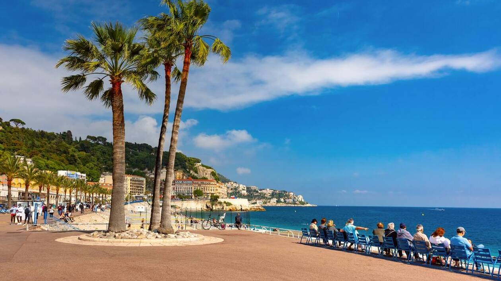
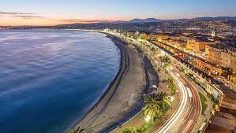
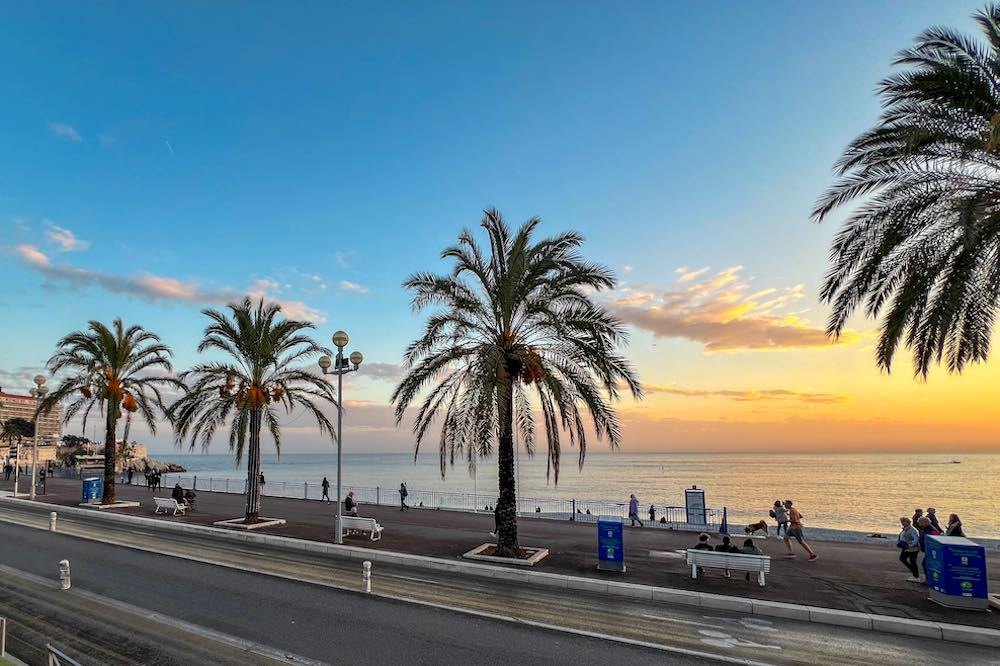
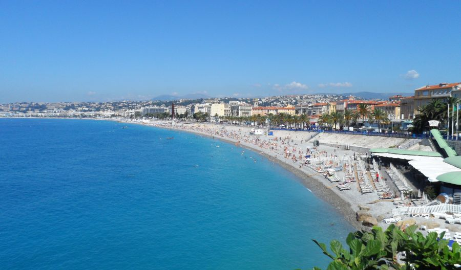

The Promenade des Anglais is a famous seaside boulevard that stretches along the Mediterranean coast in Nice. Developed in the 19th century, it quickly became one of the most iconic waterfront promenades in France.
The palm-lined walkway offers stunning views of the blue waters of the French Riviera and is popular for walking, cycling, and relaxing by the sea. Visitors can enjoy the lively atmosphere while passing beaches, cafés, and elegant historic hotels.
Today, the Promenade des Anglais remains one of the most beloved attractions in Nice. Its scenic beauty and vibrant coastal setting make it a perfect place to experience the charm of the French Riviera.


